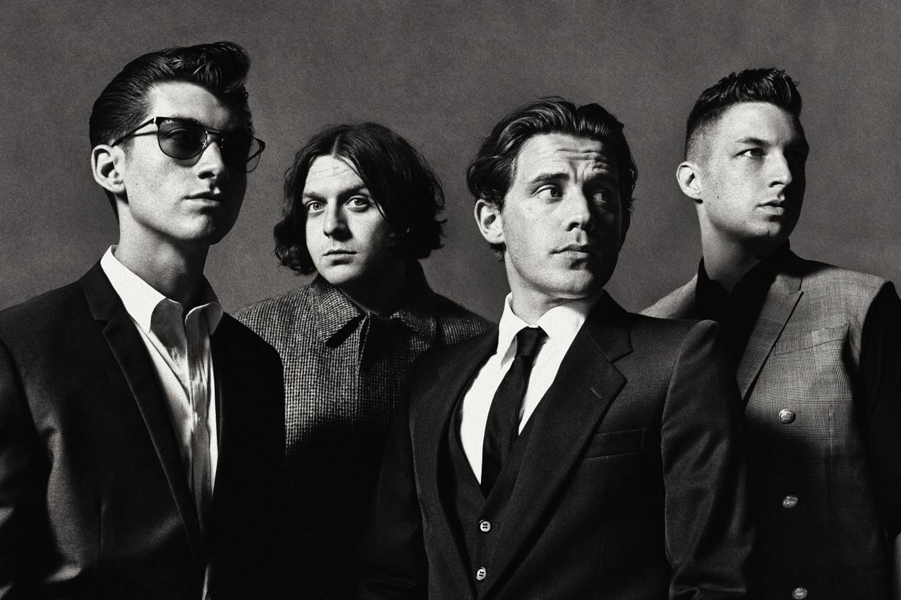

The mirror's image, it tells me it's home time
But I'm not finished, 'cause you're not by my side
And as I arrived I thought I saw you leavin', carryin' your shoes
Decided that once again I was just dreamin' of bumpin' into you
Now it's three in the mornin' and I'm tryin' to change your mind
Left you multiple missed calls and to my message, you reply
"Why'd you only call me when you're high?"
"Hi, why'd you only call me when you're high?"
Somewhere darker, talkin' the same shite
I need a partner, well, are you out tonight?
It's harder and harder to get you to listen
More I get through the gears
Incapable of makin' alright decisions, and havin' bad ideas
Now it's three in the mornin' and I'm tryin' to change your mind
Left you multiple missed calls and to my message you reply
"Why'd you only call me when you're high?"
"Hi, why'd you only call me when you're high?"
And I can't see you here, wonderin' where am I
It sort of feels like I'm runnin' out of time
I haven't found all I was hopin' to find
You said you gotta be up in the mornin'
Gonna have an early night
And you're startin' to bore me, baby
Why'd you only call me when you're high?
"Why'd you only ever phone me when you're high?"
"Why'd you only ever phone me when you're high?"
"Why'd you only ever phone me when you're high?"
"Why'd you only ever phone me when you're high?"